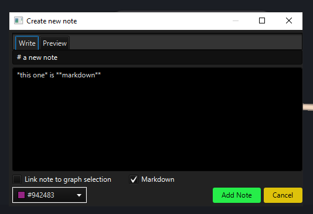

What's new in Constellation v2.11
Here is a list of changes we've added to this version of Constellation v2.11 which are also included in Constellation Cyber v1.10.
Find View Revamped
The Find View has finally received its fresh new look. This revamped version of the Find View had previously been available via the Experimental Menu since v2.6 but now that it has stabilised, it has now been moved out of Experimental and officially replaced the old version. This means that the new version now can be accessed via Ctrl-F, as was the case with the old version (no longer Ctrl-B as it was while in Experimental).
If you want to hear about some of the cool features of this revamped version, check out some of the blogs for previous versions which outline in detail some of the notable features and other improvements that were brought in as part of the revamp.
Attribute Editor Updates
The Attribute Editor has received a couple of notable updates.
The first of these is the ability to hide attributes with no values. One thing you may have noticed if you have used the Attribute Editor previously is that if you have enough attributes added on the graph, the list of attributes gets bloated, and it can be difficult to analyse the values associated with each of those attributes. This gets even more difficult if a number of those attributes don’t contain any value for the given selection.
With this new feature, it will be easier to analyse your data by decluttering the view of any attributes that contain no value. To enable, simply deselect the new “Show Empty” button in the relevant graph element panel. The number of attributes that are hidden is then displayed at the top of graph element panel so that you’re aware that those attributes are still there (just not displayed). Which attributes have no value depends on the graph selection, so an attribute may be hidden for one graph selection and visible in another.
Of course, if you would prefer to always see all the attributes (as has been the case previously), then simply select “Show Empty” in the relevant graph element panel (it is selected by default).
The second notable update is that the explicit Edit buttons previously found next to each attribute have been removed. Some time ago, Constellation enabled the ability to update attribute values by clicking on the value itself and at that point, the Edit buttons became redundant. The Edit buttons had been kept in after that to enable a transition period, but it was finally determined that now was the time for them to be removed.
Markdown Support in Notes View
The Notes View received several additions in the last version of Constellation and in 2.11, we’ve added another.
If you’ve ever wanted to add more expressiveness to your user notes, you can now apply Markdown formatting to your notes. By ticking the Markdown checkbox found in either the Create Note or Edit Note dialogs, the text that you write will be interpreted as having Markdown formatting and will display accordingly. This allows adding things such as headers, bold text, and lists in a much easier way.
If you’re unsure how to apply Markdown formatting to your notes, the Notes View help page has been updated with some examples so you should check that out. You can also use the Preview tab of the relevant dialog to see what it will look like. If you would prefer not apply Markdown formatting to your notes, you can simply leave the checkbox unticked and your note will display as it always has.
Select All and Clear All Options for Multi-Choice Dropdowns
Multi choice menus have been present in Constellation for a long while but one thing they haven’t had are quick ways to select and clear lots of options at once. This means that users must go through and (un)tick all the options they want manually which can get very tedious the longer the list of options is.
This has finally changed though, allowing users to quickly Select All or Clear All options. Simply right-click on the multi-choice dropdown to bring up a menu which will present either option to do. For plugin parameters (such as those found in Data Access View or Analytic View), you can also access these options via a dropdown conveniently located next to the multi-choice dropdown.
Data Access Plugin Category Reordering
Constellation v2.7 introduced the ability to hide Data Access Plugin categories via Preferences (Options -> CONSTELLATION -> Data Access View). In Constellation v2.11, this preference has been updated to also enable re-ordering of the categories in the visible list. To do so, click on a category in the visible list and then press the up and down arrow buttons to move the category up and down the list. After saving those changes and restarting Constellation, you should see the category order in Data Access View reflect the order you set in Preferences.
An update to the Constellation Client
For the first time in a long time, the Constellation Client has received an update. For those not familiar with it, the client is the library which enables using Constellation via a script (e.g. In Scripting View, Jupyter Notebook).
In this update, you now can rename graphs, and this has been done a couple ways. Firstly, there is a new function “rename_graph” in which you pass as parameters the new name for the graph and optionally the graph you want to rename (if you don’t specify one it will rename the active graph). The other way is through the existing “new_graph” function which now allows an optional parameter to specify a name for the graph (if you don’t like the default naming convention which will be applied otherwise).
Several Bug Fixes
Numerous bug fixes have also been made. These include:
- Quick search now remembers searches between sessions
- Auto Notes are removed from the Notes View if an action is undone
- Analytic View now remembers the results of the last analytic run after closing and re-opening the view
- Analytic View also now removes the effects of toggles (Color, Hide, Size) after the view is closed
Want to know more?
You can find out more information about the latest updates on the What's new page once you have installed version 2.11. There's loads of extra details available in the Release Notes and Change Log.
Would you like to learn more about how Constellation works?
There is a training package available on GitHub to learn how to make the most use of the various features in Constellation. There is also developer training for those seeking to deep dive into the underlying source code.
Contact Us
Do you have any feedback or suggestions for improvement? Noticed a bug? You can log an issue via the Help menu or clicking here.